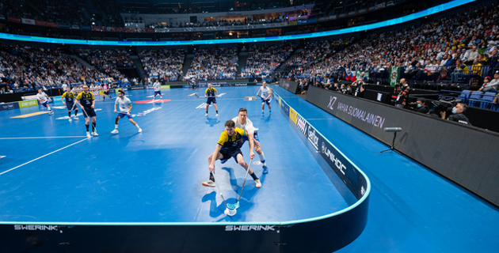
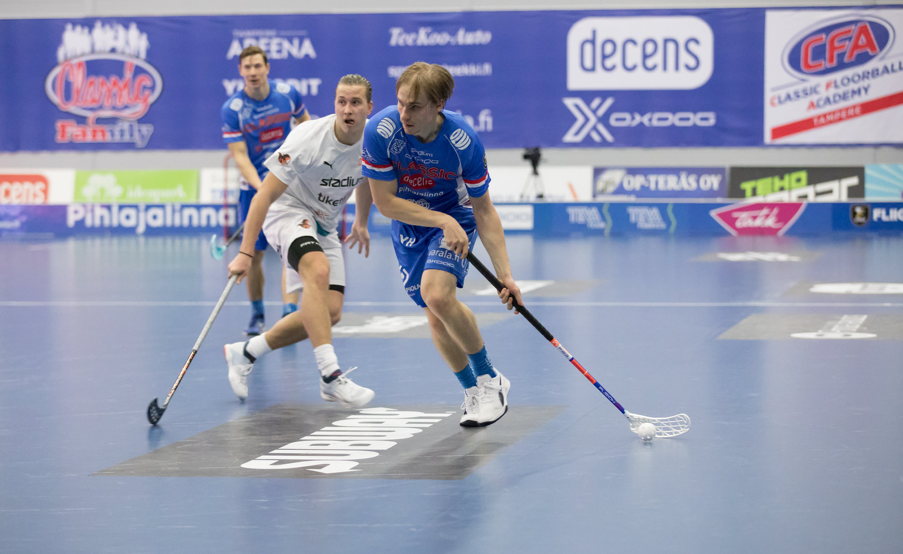
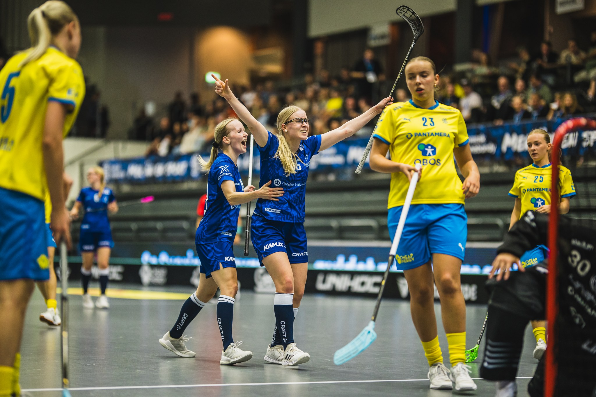
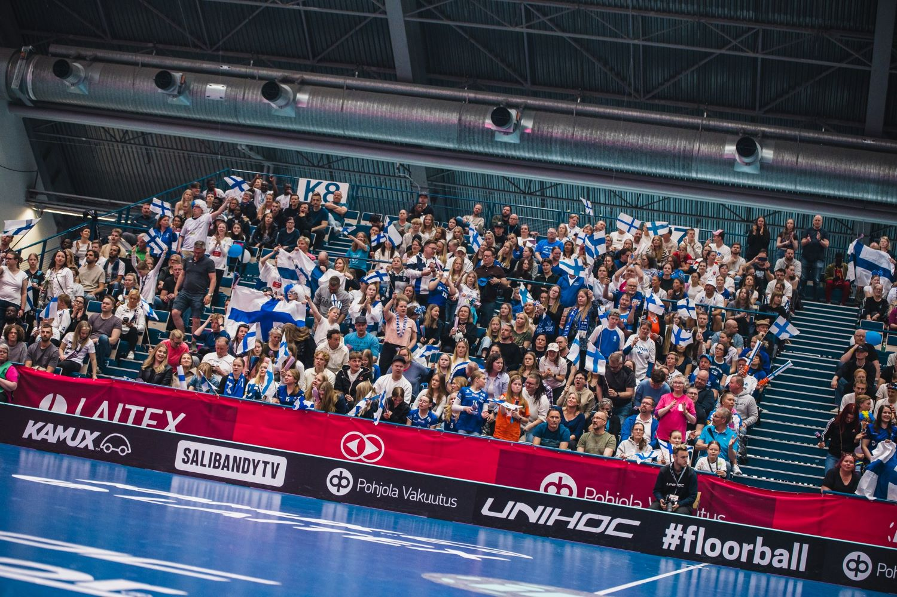

Tulevat tapahtumat

Salibandyn MM-kisat 2024 Malmö, Ruotsi
7.-15.joulukuuta 2024
Tutustu lajiin katsomalla maailman huippujen suorituksia maajoukkueissa.
Lisätietoja

F-liiga sarjakausi
11.9.2024-9.5.2025
Salibandyn Suomen pääsarjan kausi 2024-2025 on käynnissä!
Lisätietoja


Kahdet MM-kisat Suomessa peräkkäisinä vuosina
Miesten 4.–13.12.2026 ja naisten 3.–12.12.2027.
Kotikisojen huumaa peräkkäisinä vuosina, kun maailman parhaat saapuvat suomeen.
Lisätietoja